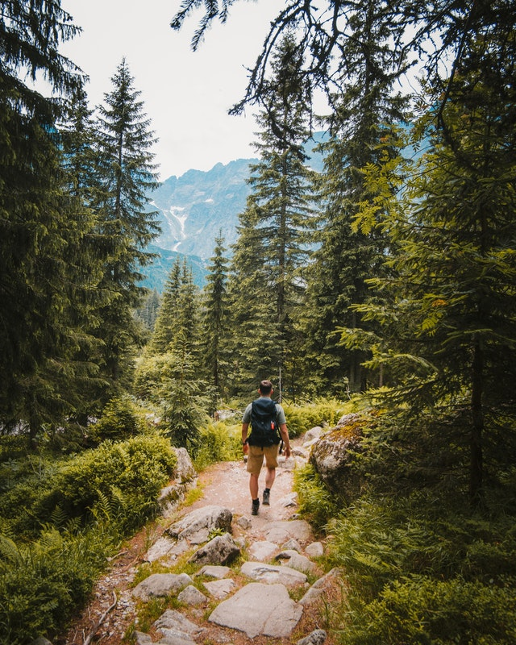
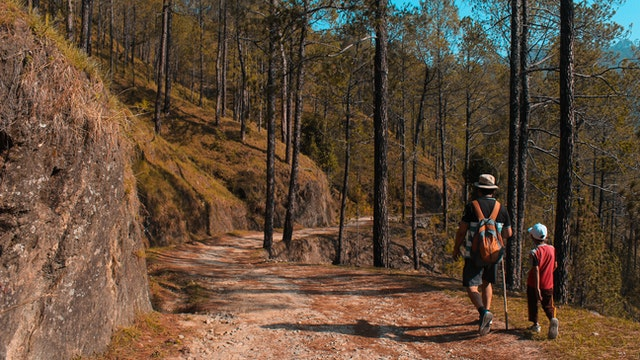
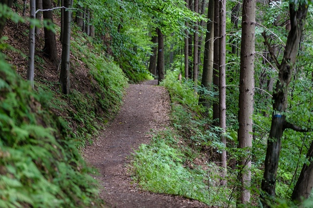
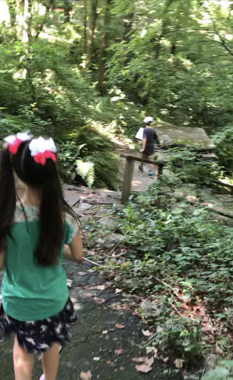
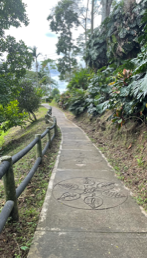
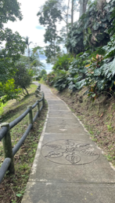

Hiking Images
    

My name is Erika Borrali and I reside in San Francisco for almost 23 years. I’m a mom of two beautiful kids ages 6 and 8 years old. My hobby is to go hiking. I enjoy hiking because I like walking on uneven terrains, watch out for rocks, branches, and other obstacles, as well as observing nature. It helps me physically and mentally as well. Also, it helps my kids stay active and moving. Make the hike interactive with a nature-themed scavenger hunt or a hike to a cool feature, like a waterfall.
To start your hiking hobby, the only skill you need is the ability to walk. Just place one foot in front of the other to hike. Just find a short, easy trail nearby and go hiking. The shoes you wear are very important as it can lead to sore feet and a short hike. Terrain shoes are the best, but light hiking shoes are just fine.The pants to wear for a hike are the ones that are breathable and help keep you cool or warm depending on the temperature. Don't wear denim jeans when hiking, as they can be uncomfortable.
With a little planning, you can enjoy a safe, comfortable and pleasurable hike. It is very important that with any physical activity, you consult with your doctor. Eat before and after any hike, as your body need to replenish its energy. If you want to read more I attached a link where you will find everything you need to know on how to start hiking, from packing essentials, to how to prepare for a day hike and so on.